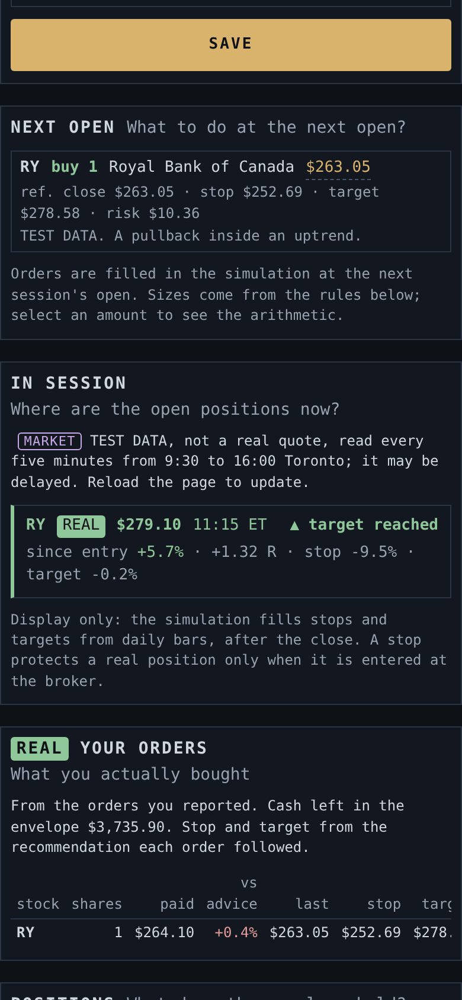
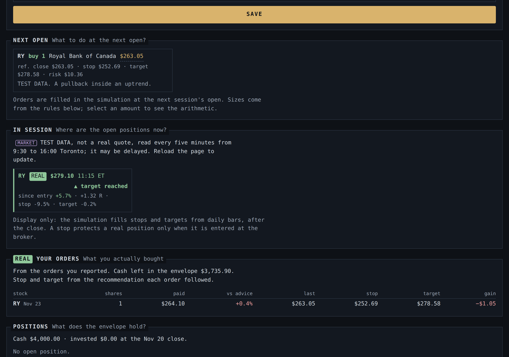

Loop 015 — A price during the session
2026-11-22 · During market hours, each open position shows a recent price, its distance to the stop and the target, and a flag when a level is reached or near. Display only. Version 0.18.0.
Why
Say it is 11:20 and a position reaches its target. What happens? Does my dashboard refresh several times a day? … Yes, I like that: a price during the session for the open positions.
The owner's words, reworded in English. On notifications: "no alerts for now".
What changed


Invented prices on a made-up day, from a local server; the source names itself as test data.
- Every five minutes, in session only: 9:30 to 16:00 Toronto, at most ten symbols, the open positions' only; nothing outside those hours.
- One row per position: price and time, change since entry, R, distance to stop and target; ▲ target reached, ▼ stop reached or ! near stop, a word and a mark, not colour alone.
- Never a stale price as live: outside the session, or without a price of the day, the last close, named as such. A price with no shares traded does not count.
- Display only: the simulation and the track record stay on daily closes; the protection is the stop entered at the broker.
Checks
| Check | Result | Evidence |
|---|---|---|
| Unit and browser tests | passed | 226 and 21; rows and flags matched to arithmetic by hand; no request outside the session. |
| CI and CodeQL | passed | Green on the release commit. |
| Live after deploy | passed | Version 0.18.0; the session watcher closed on a Sunday, zero requests. |
| A real session with open positions, and memory | not run | Tuesday Nov 24, after the first simulated fills. |